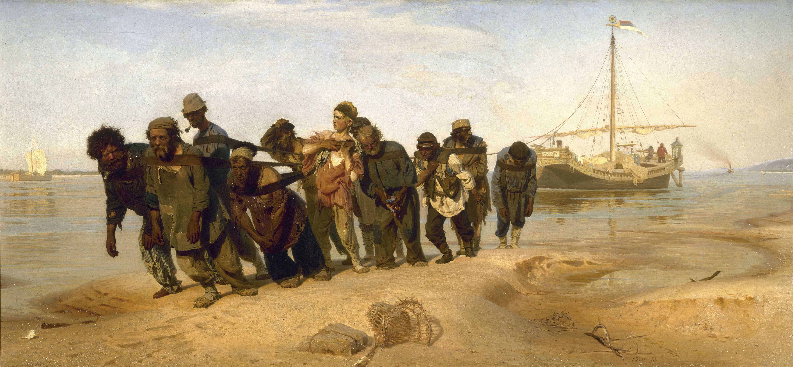

康斯坦丁·索莫夫 Konstantin Somov – 公园烟花 Firework in the Park
文章目录
图1. Konstantin Somov, 公园烟花 Firework in the Park, 1907年, location unknown
1888年至1897年期间Somov在著名的皇家艺术学院Imperial Academy of Arts学习，他的老师是俄国国宝级画家列宾（他的现实主义作品《伏尔加河上的纤夫》（图2）是最著名的俄国画作），但他并未继承老师的现实风格。 在学校里，他结识Sergei Diaghilev和Léon Bakst，三个人创办了俄国的艺术杂志《Mir iskusstva》，为新艺术运动奔走，对20世纪初的俄国艺术产生了深远影响。 俄国革命结束后，他移民到美国，随后迁居巴黎直至逝世。
他的作品以风景画、风俗画、肖像画居多[1]，另外他也为一些书籍绘制插画。
 图2. Ilya Repin, 伏尔加河上的纤夫Barge Haulers on the Volga, 1870–1873年, 131.5×281cm, Russian Museum, Saint Petersburg
Somov的肖像画作品中最广为人知的是蓝衣女子Lasy in Blue（图3），画中女子也是新艺术运动时期的艺术家Yelizaveta Martynova，她的眼神中仿佛透着对艺术革新的坚定。
Somov的风景画The Rainbow（图4）在2007年以733万刀完成拍卖，创下当时俄国艺术品的最高拍卖记录。
 图3. Konstantin Somov, 蓝衣女子 Lady in Blue Portrait of the Artist Yelizaveta Martynova, 1897-1900年, Tretyakov Gallery, Moscow
图3. Konstantin Somov, 蓝衣女子 Lady in Blue Portrait of the Artist Yelizaveta Martynova, 1897-1900年, Tretyakov Gallery, Moscow
 图4. Konstantin Somov, 彩虹 The Rainbow, 1908年, 60.3x73.7 cm
图4. Konstantin Somov, 彩虹 The Rainbow, 1908年, 60.3x73.7 cm
 图5. Konstantin Somov, 爱人 The Lovers, ~1930年
图5. Konstantin Somov, 爱人 The Lovers, ~1930年
参考： [1] Somov作品集，https://commons.wikimedia.org/wiki/Category:Portraits_by_Konstantin_Somov?uselang=ru [2] Somov笔下的男性作品集，https://commons.wikimedia.org/wiki/Category:Portraits_of_nude_men_by_Konstantin_Somov